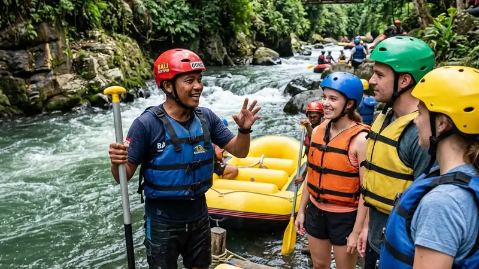

Penyedia jasa rafting di Malang adalah operator wisata yang menawarkan aktivitas arung jeram di sungai-sungai kawasan Malang Raya dengan pemandu, perahu karet, dan perlengkapan keselamatan. Panduan ini membahas cara memilih operator yang aman dan sesuai kebutuhan.
- Malang Raya memiliki beberapa titik arung jeram populer, salah satunya di sekitar aliran Sungai Brantas dan anak sungainya.
- Penyedia jasa rafting di Malang umumnya menawarkan paket individu, keluarga, komunitas, hingga korporat.
- Keamanan operator dapat dilihat dari kelengkapan alat pelindung diri, rasio pemandu terhadap peserta, dan briefing sebelum turun sungai.
- Biaya jasa rafting bervariasi tergantung jarak lintasan, tingkat kesulitan jeram, dan fasilitas tambahan.
- Memilih operator berpengalaman mengurangi risiko dan meningkatkan kenyamanan selama aktivitas.
Apa Itu Penyedia Jasa Rafting di Malang?
Penyedia jasa rafting di Malang adalah badan usaha atau kelompok operator wisata yang menyediakan layanan arung jeram lengkap, mulai dari perahu karet, dayung, pelampung, helm, hingga pemandu bersertifikasi. Layanan ini biasanya beroperasi di jalur sungai dengan tingkat kesulitan tertentu, mulai dari jeram tenang yang cocok untuk pemula hingga jeram lebih menantang bagi peserta berpengalaman.
Kawasan Malang Raya, yang mencakup Kabupaten Malang dan Kota Batu, dikenal memiliki topografi berbukit dengan aliran sungai yang mendukung aktivitas arung jeram. Sungai Brantas, sebagai salah satu sungai terpanjang di Jawa Timur, mengalir melalui sebagian wilayah ini dan menjadi salah satu lokasi yang kerap dimanfaatkan untuk wisata arung jeram bersama anak-anak sungainya.
Siapa yang Cocok Menggunakan Jasa Rafting di Malang?
Jasa rafting di Malang cocok digunakan oleh berbagai kalangan, mulai dari wisatawan individu, keluarga, kelompok pelajar, komunitas hobi, hingga perusahaan yang ingin mengadakan kegiatan outbound atau team building. Setiap segmen biasanya diarahkan ke paket dengan tingkat kesulitan dan durasi yang disesuaikan.
Bagi pemula, sebagian besar penyedia jasa rafting di Malang menawarkan jalur dengan jeram yang relatif tenang serta pendampingan pemandu secara intensif. Sementara bagi peserta yang sudah terbiasa, tersedia opsi jalur dengan tantangan arus lebih tinggi.
Kapan Waktu yang Tepat Menggunakan Jasa Rafting di Malang?
Aktivitas rafting umumnya dapat dilakukan sepanjang tahun, namun kondisi debit air sungai dapat berubah mengikuti musim. Pada musim hujan, debit air cenderung lebih tinggi sehingga arus dapat terasa lebih kuat, sementara pada musim kemarau debit air biasanya lebih stabil dan cenderung lebih landai.
Penyedia jasa rafting di Malang biasanya memantau kondisi cuaca dan debit sungai sebelum keberangkatan, dan berhak menunda atau membatalkan jadwal apabila kondisi dinilai tidak aman bagi peserta.
Mengapa Memilih Penyedia Jasa Rafting yang Tepat Itu Penting?
Memilih penyedia jasa rafting di Malang yang tepat berkaitan langsung dengan keselamatan peserta. Aktivitas arung jeram melibatkan risiko fisik seperti terjatuh dari perahu, benturan dengan bebatuan, atau kelelahan saat mendayung, sehingga standar keselamatan operator menjadi faktor penentu.
Operator yang berpengalaman umumnya memiliki prosedur keselamatan standar, mulai dari pengecekan alat sebelum digunakan, briefing teknik dayung dan sinyal darurat, hingga penempatan pemandu di titik-titik rawan sepanjang jalur sungai.
Bagaimana Cara Memilih Penyedia Jasa Rafting di Malang yang Aman?
Cara memilih penyedia jasa rafting di Malang yang aman meliputi pengecekan legalitas usaha, kelengkapan alat keselamatan, kualifikasi pemandu, dan ulasan dari peserta sebelumnya. Kombinasi faktor ini membantu memastikan aktivitas berjalan lancar.
Beberapa aspek yang perlu diperhatikan calon peserta antara lain:
- Ketersediaan alat pelindung diri standar seperti pelampung, helm, dan sepatu khusus.
- Rasio jumlah pemandu terhadap jumlah peserta dalam satu perahu.
- Briefing keselamatan sebelum aktivitas dimulai, termasuk penjelasan sinyal darurat.
- Reputasi operator berdasarkan pengalaman peserta sebelumnya.
- Kejelasan informasi mengenai jalur, jarak, dan tingkat kesulitan yang ditawarkan.
Apa Saja Faktor yang Memengaruhi Biaya Jasa Rafting di Malang?
Biaya jasa rafting di Malang umumnya dipengaruhi oleh jarak lintasan, tingkat kesulitan jeram, jumlah peserta dalam satu paket, serta fasilitas tambahan seperti dokumentasi, makan, atau transportasi antar-jemput. Semakin panjang jalur dan semakin lengkap fasilitas, biaya paket cenderung semakin tinggi.
Paket komunitas atau korporat dalam jumlah besar terkadang memperoleh harga per orang yang lebih kompetitif dibandingkan pemesanan individu, karena adanya efisiensi operasional bagi penyedia jasa.
Apa Saja Kesalahan Umum Saat Memilih Jasa Rafting di Malang?
Kesalahan umum saat memilih jasa rafting di Malang antara lain tergiur harga murah tanpa mengecek standar keselamatan, tidak menanyakan kelengkapan alat, serta mengabaikan kondisi fisik peserta terhadap tingkat kesulitan jalur yang dipilih. Kesalahan semacam ini dapat meningkatkan risiko selama aktivitas.
Sebagian peserta juga sering melewatkan sesi briefing karena merasa sudah memahami teknik dasar, padahal setiap operator dapat memiliki prosedur dan sinyal komunikasi yang sedikit berbeda sesuai kondisi jalur masing-masing.
Tips Praktis Sebelum Menggunakan Jasa Rafting di Malang
Sebelum memesan, calon peserta sebaiknya mempersiapkan diri secara fisik, memastikan tidak memiliki kondisi kesehatan yang menghalangi aktivitas fisik berat, serta membawa pakaian ganti dan alas kaki yang sesuai anjuran operator. Berkomunikasi dengan pihak penyedia jasa mengenai kebutuhan khusus, seperti peserta anak-anak atau lansia, juga membantu operator menyesuaikan jalur yang paling tepat.
Menurut berbagai laporan tren pariwisata petualangan di Indonesia, minat masyarakat terhadap wisata alam berbasis aktivitas fisik seperti arung jeram terus menunjukkan pertumbuhan dalam beberapa tahun terakhir, khususnya di kawasan dengan akses sungai yang mendukung seperti Jawa Timur.
FAQ
Apakah rafting di Malang aman untuk pemula?
Rafting di Malang umumnya aman untuk pemula selama menggunakan penyedia jasa yang menerapkan standar keselamatan dan memilih jalur dengan tingkat kesulitan rendah hingga menengah.
Berapa lama durasi aktivitas rafting di Malang?
Durasi aktivitas rafting bervariasi tergantung jarak jalur yang dipilih, umumnya berkisar antara satu hingga beberapa jam termasuk waktu persiapan dan briefing.
Apakah anak-anak boleh mengikuti rafting di Malang?
Sebagian penyedia jasa menetapkan batas usia atau tinggi badan minimum untuk peserta anak-anak demi alasan keselamatan, sehingga sebaiknya dikonfirmasi langsung ke operator terkait.
Arya
penulis artikel yang sudah berpengalaman di dalam dunia wisata outbound Batu Malang.